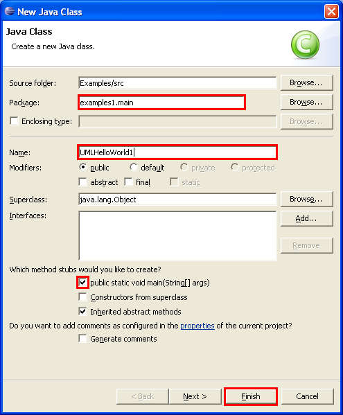
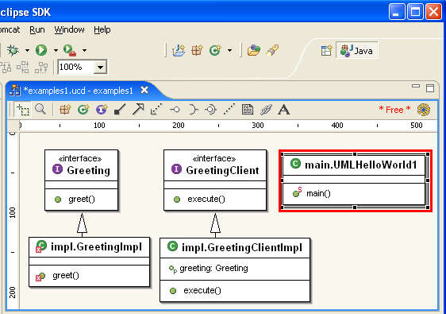
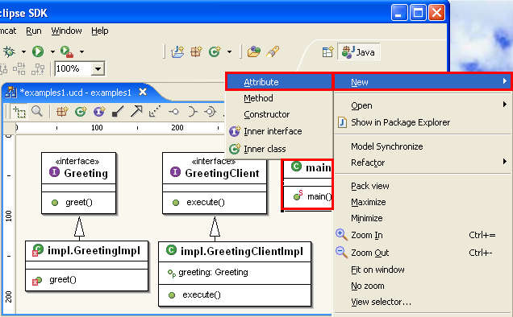
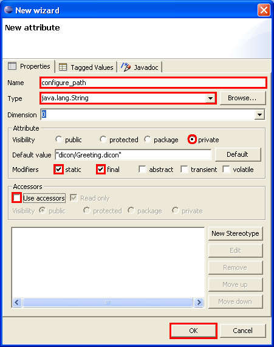
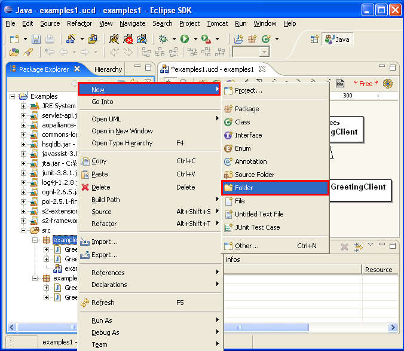
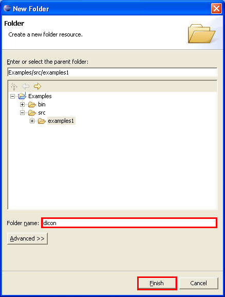
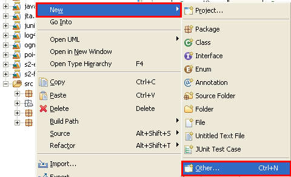
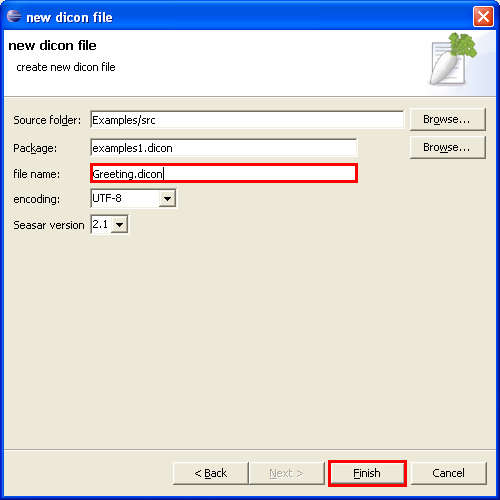
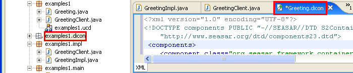

Enter examples1.main as the "Source folder:", UMLHelloWorld1 as the "Name", and check the public static void main(String[] args). Select the Finish button.

We'll next define the path to the dicon configuration file. The path may be directly entered in the program, but it is a better practice to define it as a static final variable.

Right click on the main.UMLHelloWorld1 and select New - Attribute.

Enter configure_path as the "Name", java.lang.String, select private as the "Visibility of Attribute", check static and final as Modifiers, and uncheck Use accessors.
Select the OK button.

We'll now enter codes to the main method.
Double click on "main.UMLHelloWorld1" and select the UMLHelloWorld1.java. Enter the codes to the main method. Be sure to also add "import".
Now for the final file - dicon configuration file. We'll create the file in the dicon folder.
Right click on examples1 under the "src". Select New - Folder in the context menu.

Enter dicon as the "Folder name". Select the Finish button.

Right click on the examples1.dicon folder we just created. Select New - Other....

Expand Kijimuna - Dicon File and select the Next > button.

Enter Greeting.dicon as the file name and select the Finish button.

Select the examples1.dicon and select the Greeting.dicon tab.
Enter the codes as follows: